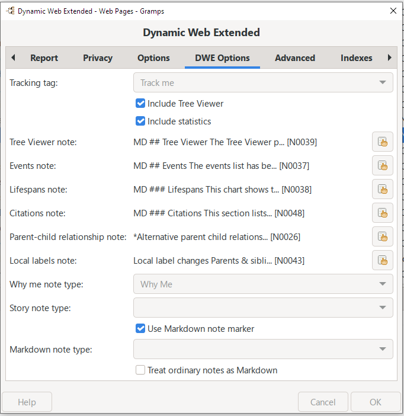
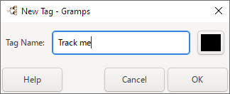
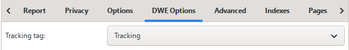
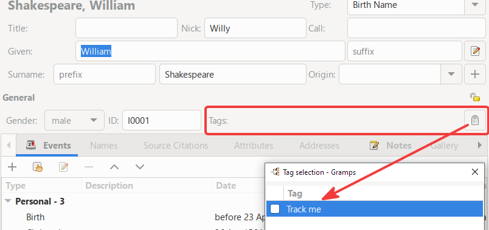
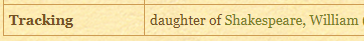
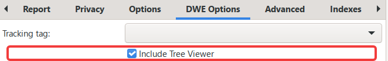
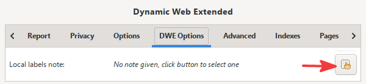
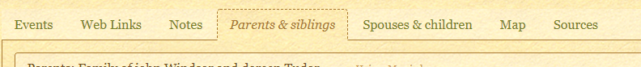
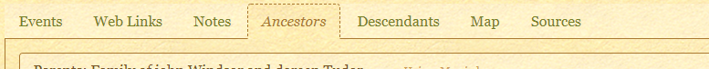
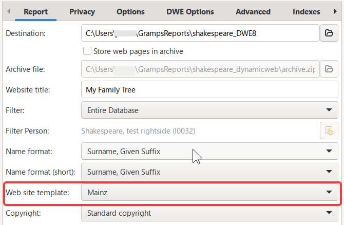

21 DWE Options¶
☑ For creators ☐ For visitors
For the website creator, Dynamic Web Extended adds a DWE Options page to the report options. This page brings together the settings for features added by DWE. Options inherited unchanged from the Dynamic Web Report (for example the Privacy options) remain on their normal option pages and are not described in this Guide.

Figure 30- DWE Options
21.1 Option defaults and saved settings¶
When creating a DWE report for a family tree for the first time, DWE provides initial values for its options. Gramps saves the options. If you change them, they are reused the next time you create a DWE report for that family tree. Each family tree therefore has its own saved report settings.
*Notes used only to configure DWE can conveniently be attached to a specially created dummy person in the tree, such as a person named ‘Gramps’. This prevents them from appearing as unused objects when Gramps database repair or checking tools are used. Examples include the Tree Viewer, Events, Lifespans, Parent-child relationship and Local labels notes.
The initial settings for a new family tree are:
| DWE option | Initial setting |
|---|---|
| Tracking tag | Empty |
| Include Tree Viewer | Selected |
| Tree Viewer note | Empty |
| Events note | Empty |
| Lifespans note | Empty |
| Citations note | Empty |
| Parent-child relationship note | Empty |
| Local labels note | Empty |
| Why Me note type | Empty |
| Story note type | Empty |
| Use Markdown note marker | Selected |
| Markdown note type | Empty |
| Treat ordinary notes as Markdown | Not selected |
21.2 Tracking tag¶
The Tracking tag identifies the tag to be used when DWE calculates Tracking relationships. Tracking shows the connection of each person in the report to the tracked individual or individuals.
DWE tracking uses a Gramps tag. Instructions on how to create and manage Gramps tags are provided in the Gramps Wiki Manual.
See Chapter 11 Tracking for a description of the information displayed by this feature.
21.2.1 Create a Gramps tag¶
Select Edit → Tag → New Tag from the Gramps top menu. Create or choose a Gramps tag to identify the people you want to track. The tag can have any name; for example, you might call it ‘Track me’. You can use an existing tag.

Figure 31- create a tracking tag
21.2.2 Set the Tracking tag value¶
Select an existing tag in the Tracking tag option.

Figure 32 - select the tag to be used
Tracking is optional. To turn it off, select the blank entry for Tracking tag before generating the report again. If the option is left empty, Tracking entries are not generated.
21.2.3 Assign the Tracking tag¶
In the Gramps person editor, for each person you want to be tracked, select the Tag button and assign the ‘Track me’ tag to that person.
For example, you might assign that tag to William Shakespeare.

Figure 33- apply tagging on the Person Editor page
The Tracking entry on a person's page can then show their relationship to William Shakespeare, such as son, sister or wife. The web page for Susanna Shakespeare would show this Tracking entry:

21.3 Include Tree Viewer¶
Select Include Tree Viewer to include an interactive Tree Viewer in the generated website.

When this option is selected, DWE adds a Tree Viewer tab to the website's person pages and automatically generates the GEDCOM file required by this viewer.
Clear the checkbox if the Tree Viewer is not required.
Warning — Tree Viewer performance with large family trees
The Tree Viewer uses the Topola genealogy viewer, which may have difficulty displaying large or complex family trees. In some cases, the tree may fail to render, and the browser may become unresponsive.
During testing, a family tree containing approximately 1,100 people displayed correctly, while a test tree containing approximately 4,600 people failed to render and caused the browser to become unresponsive.
The same behaviour was observed in Gramps' Tools → Analysis and Exploration → Interactive Family Tree, which also uses Topola.
These observations do not establish a fixed maximum tree size. Performance may also depend on the structure and complexity of the family tree.
Recommendation: Before enabling Tree Viewer in DWE, test your family tree using Gramps' Interactive Family Tree tool. If it does not display correctly there, it may also fail in DWE.
See Chapter 10 Tree Viewer for more information about using this feature.
21.4 Include Statistics¶
This option will display a top level Statistics menu with two selections:
-
The Metrics selection has no content at present.
-
The Notable records selection displays lists of categories such as longest-lived person, person with most marriages, most children and similar.
See chapter 18 Statistics for more information.
21.5 About... notes¶
These options all use the same DWE About note concept.
An About note is an optional Gramps note containing information that the website creator wants to provide to visitors for each of these features. Its contents are displayed in a collapsible/expandable About... section above the main content. To collapse or expand the note a user can click the chevron icon to the right of the About title bar.
The text is displayed from the note, and the note can say whatever you want, in whatever language you need. An About note might explain how to use the feature and what information can be seen. Example About notes are provided in the Appendix.
The features themselves do not require an About note. Leaving the corresponding option empty simply means that there is no About note, and an About box will not be displayed.
21.5.1 Tree Viewer note¶
Select an optional Gramps note to provide the About note for the Tree Viewer display.
21.5.2 Events note¶
Select an optional Gramps note to provide the About note for the Events display.
21.5.3 Lifespans note¶
Select an optional Gramps note to provide the About note for the Lifespans display.
21.5.4 Citations note¶
Select an optional Gramps note to provide the About note for the Citations display.
21.6 Parent-child relationship note¶
Gramps records the relationship of a child to each parent in the family, for example Birth or Adopted. DWE extends that to name the relationship in both directions — from a parent to a child and from a child to a parent. The extended relationship phrases are used for wording in the Events tables and in the Lifespans charts.
The optional Parent-child relationship note allows the website creator to override the default terms. If you don’t need to change the defaults, you don’t need a note.
Each relationship is placed on a separate line of the note. A line has 5 fields separated by ‘>’:
Pattern for parent-child note:
Gramps name > parent phrase > child phrase > kinship position > optional comment
The first field is the Gramps relationship name.
The second is the phrase used for the parent relationship and
the third is the phrase used for the child relationship.
The fourth field controls whether DWE should add the appropriate kinship term, such as father, mother, parent, son, daughter or child. It can take these values:
| Value | Meaning |
|---|---|
| A | Add the kinship term after the relationship phrase |
| P | Add the kinship term before the relationship phrase |
| blank | Do not add a kinship term |
The fifth field is an optional comment about the line.
21.6.1 Example phrases¶
This example:
can produce adopting father and adopted son
Using P instead:
can produce father adopting and son adopted. This provides flexibility for languages in which a different word order is appropriate.
Phrase fields can deliberately be left empty:
This means that only the kinship term is displayed, such as father, mother, son or daughter
Anything after the fourth field is ignored by DWE and can therefore be used as a comment:
21.6.2 Using relationship substitutions¶
The optional note does not need to replace the entire set of defaults. A line in the note overrides the wording for that relationship. Relationships not mentioned in the note continue to use their built-in defaults.
21.6.3 Other Languages¶
The note feature works with other languages. For example, instead of ‘Birth’ The note for a French locale would start with ‘Naissance’, followed by the parent and child phrases, and the A and P option if required.
21.7 Local labels note¶
The Local labels note allows some labels used in the generated website to be replaced with wording chosen by the website creator.
This is useful where different terminology is preferred for a particular family history, or where a more explanatory label is wanted without modifying DWE itself. If you don’t need different terminology, you don’t need a note.
Select the Gramps note containing the required label definitions. If the option is left empty, the normal DWE labels are used.
21.7.1 Creating a Local Labels note¶
Create a Gramps note. It can be of any type, although General is probably a useful choice.
Each label replacement is entered on a separate line in the form:
For example:
The label on the left must exactly match the existing DWE label. The > character separates the existing and replacement labels.
Lines that do not contain the separator are ignored. They can therefore be used for comments or a description of the notes. Putting a description on the first line of the note can also make the note easier to recognise when selecting it from a list of Gramps notes.
In my Local labels note the first line, a comment line, starts with a dash for convenience, so it is sorted towards the top of the note lists when I look for it later.
21.7.2 Selecting the note¶
When creating the report, select the required note using the Local labels note selector on the DWE Options page.

Figure 34- note selector
Generate the report and the specified labels will be replaced.
The changes do not alter the original DWE labels in the DWE code or the information stored in Gramps. To stop using the replacements, clear the Local labels note selection and generate the report again.
21.7.3 Scope of a replacement¶
A Local Labels replacement applies wherever DWE uses the translated label. It is not restricted to a particular page or tab. Care should therefore be taken when replacing a label that may be used in several places.
Local Labels operate on the labels in the language used to generate the report. This means replacements can also be used with translated DWE reports.
21.7.4 Example¶
For example, DWE uses Parents & siblings and Spouses & children for the two person-page tabs that the original Dynamic Web Report named Ancestors and Descendants. If you prefer the original terminology, Local Labels can restore it:
The DWE display changes:

Figure 35- without local labels

Figure 36- after local labels
21.8 Note types to enhance the person page¶
The next two note types identify a type of note. If a person has a note of that type in their Gramps record, then the content of the note is displayed specially in the top section of their website page. The note types to be identified are the Why me note type and Story note type.
21.9 Why me note type¶
The Why me note type identifies notes that DWE should put into the Why Me information displayed for a person.
21.9.1 Create Why Me note type¶
You can create a custom note type specifically for this purpose. In my tree I use a custom note type named Why Me, but you can use any note type you prefer.
Select that note type in the DWE option for Why me note type. Why me is optional; if no note type is selected, then Why Me is not shown.
21.9.2 Add Why me notes¶
Prior to generating the DWE report, in your Gramps database you will need to create a Gramps note for a person and attach it to the person. Set the note to the type selected for the Why Me note type.
Attach the note to the person using the Notes tab in their Person Editor. You can share a note between persons if appropriate or create a different note for each person.
21.9.3 Result¶
DWE finds that note type in a person’s data when the report is generated by the creator. The DWE website will display the note in the Why me entry on the person’s website page.
See Why Me for further explanation.
21.10 Story note type¶
The Story note type identifies the notes used for the short Story displayed near the top of a person's page.
The Story note type option is very similar to the Why Me note type option described above. You can create a custom note type specifically for this purpose. In my tree I use a custom note type called Story, but you can use any note type you prefer.
A person with a note of that type will then have it displayed as their Story on their website person page.
If no Story note exists for a person, the Story is not displayed. Story is optional. To turn it off, select the blank entry for Story note type before generating the report again.
See Story for further information.
21.11 Markdown in notes¶
DWE can render Markdown contained in Gramps notes. There are three ways of identifying notes that should be treated as Markdown. These methods can be used separately or together.
DWE first preserves the normal Gramps styling in a note and then applies Markdown processing. This makes it possible, for example, to add a Markdown table to a note that also contains Gramps formatting such as bold, underline or subscript.
Because this combines two formatting systems, unusual combinations of Gramps styling and Markdown should be checked in the generated report.
21.11.1 Use Markdown note marker¶
When Use Markdown note marker is selected, an individual note can be identified as Markdown by putting:
MD
by itself on the first line.
DWE recognises this as its Markdown marker and while converting the note it removes the marker from the displayed note. The note can be of any type, except Html code and To Do.
The MD marker is a fixed DWE convention. The option determines whether DWE recognises the marker; it does not change the marker itself.
This option is selected initially. It can be turned off if you don’t want to use the MD marker method.
21.11.2 Markdown note type¶
The Markdown note type provides another way to identify Markdown notes.
Select a Gramps note type that is to be used for Markdown. Eligible notes of that type are then processed as Markdown without requiring an MD marker on each note.
This can be convenient when Markdown notes are maintained as a distinct type in the Gramps database.
21.11.3 Treat ordinary notes as Markdown¶
Selecting Treat ordinary notes as Markdown applies Markdown processing more generally. Ordinary notes can then contain Markdown without needing either the MD marker or the selected Markdown note type.
The three methods therefore provide different levels of control: the marker can identify individual notes, a note type can identify a group of notes, and this option can apply Markdown processing generally.
Gramps Html code and To Do notes are excluded from DWE Markdown processing. Their note types take precedence over all three Markdown methods. For example, an Html code note is not processed as Markdown even if its first line contains the MD marker.
21.12 Website themes¶
The Report options page allows the site creator to affect the appearance of the site using the Web site template option. In this guide website templates are called website themes.

Figure 37- website option
The original DWR provided two options, named Default and Mainz. DWE has increased the number of options. To select a new theme, select its name from the dropdown list.
The theme selected in Gramps determines the initial appearance of the website, but with DWE visitors can subsequently choose a different theme. Their view of the site will change to match their newly selected theme. The visitor option is described in section 17 Website Theme
The new themes are from Bootswatch, a free, open-source collection of themes that change the visual appearance of the Bootstrap front-end framework used inside DWR and DWE. See the Bootswatch site for more information.
21.13 Short name option¶
DWE inherits a Short Name Format option on the Report options page, to use for person names in parts of the report. The short name is used in the top-level menu Tree when that tree is displayed. DWE also uses the short name in the new one-line heading section of a person page.